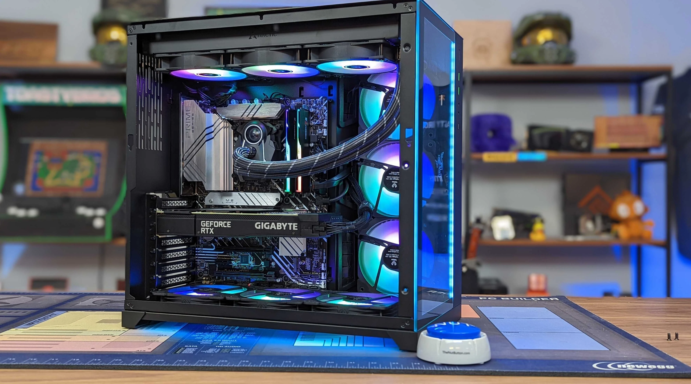
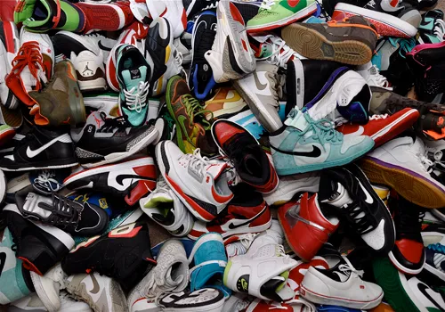
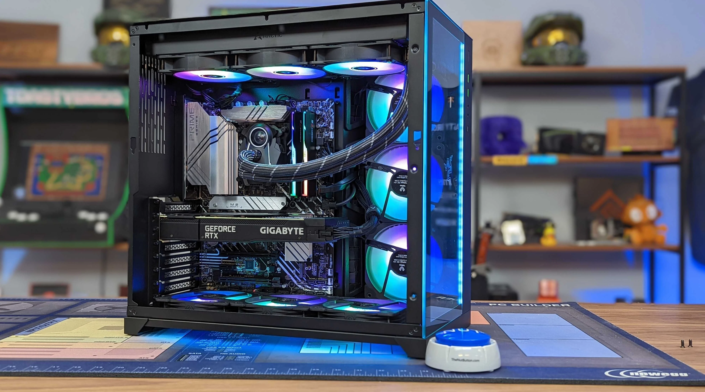
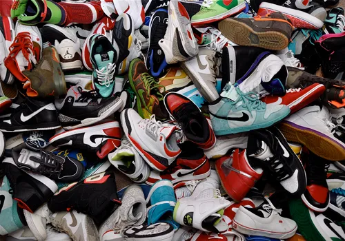

I enjoy exploring the world of technology, particularly in the field of Computer Science. Beyond academics, I have a keen interest in coding and programming, often spending time developing projects that challenge my skills. In my free time, I like to stay updated on the latest tech trends, play video games, and stay active through outdoor activities like basketball and jogging. I have a passion for competitive gaming, and I love playing games like Valorant, Call of Duty Warzone, and Overwatch 2 (Learn more about said games by clicking on the images above). I made money through Fortnite wagering, but I don't really enjoy Fortnite anymore. Aside from gaming, I'm really into building PCs—I actually built my first one when I was in 6th grade. I’m also big on fashion, especially when it comes to shoes like Jordans.